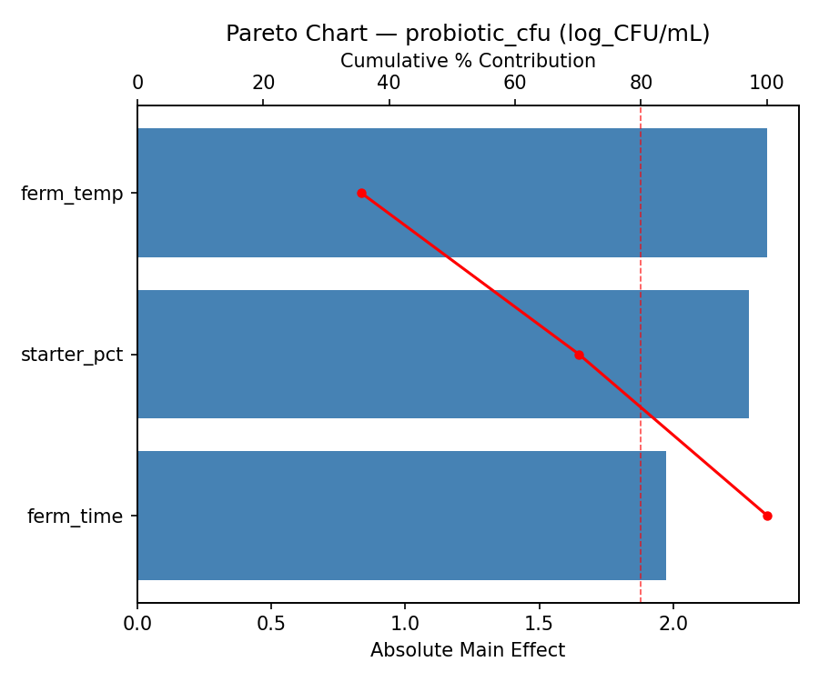
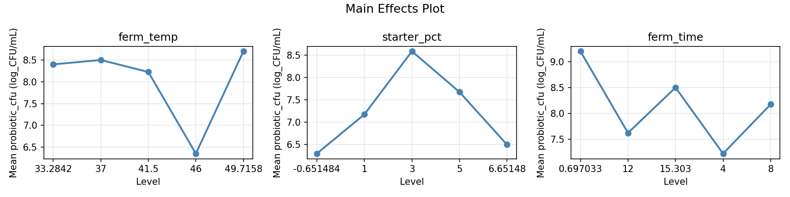
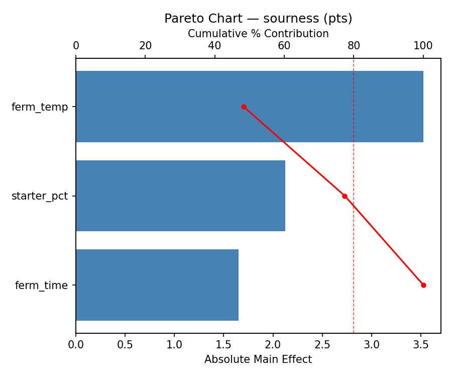
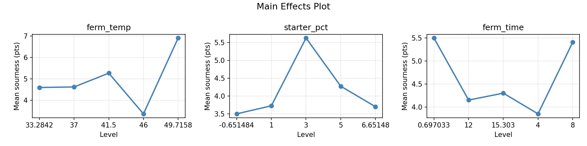
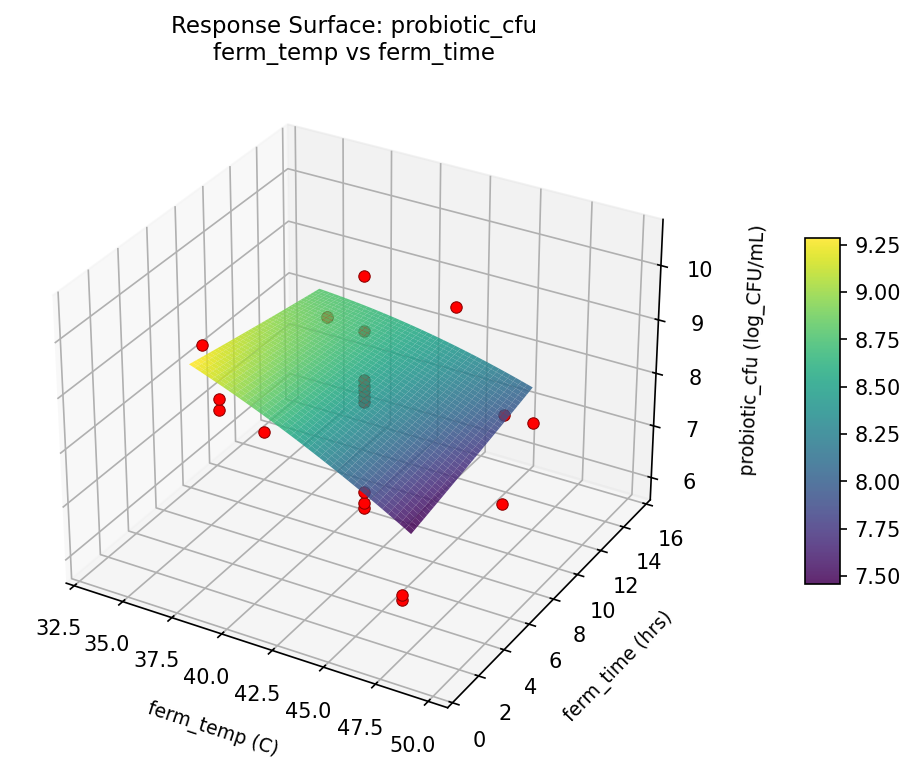
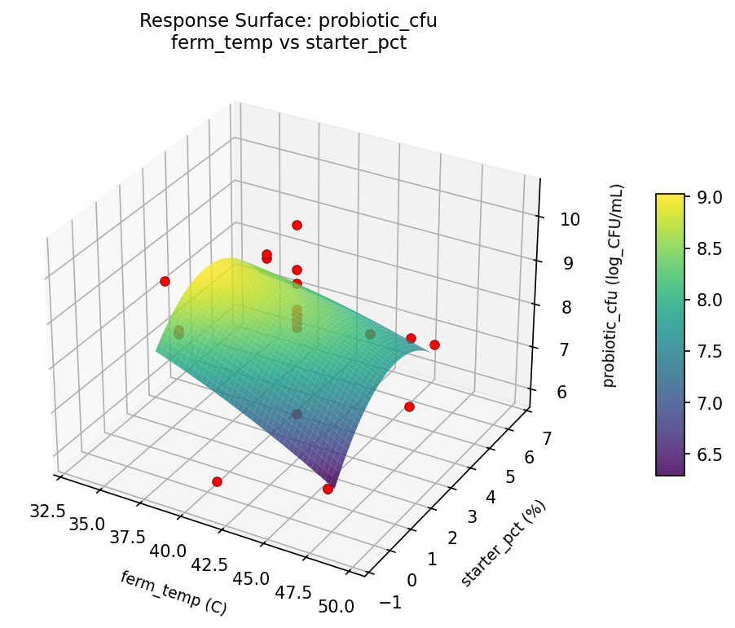
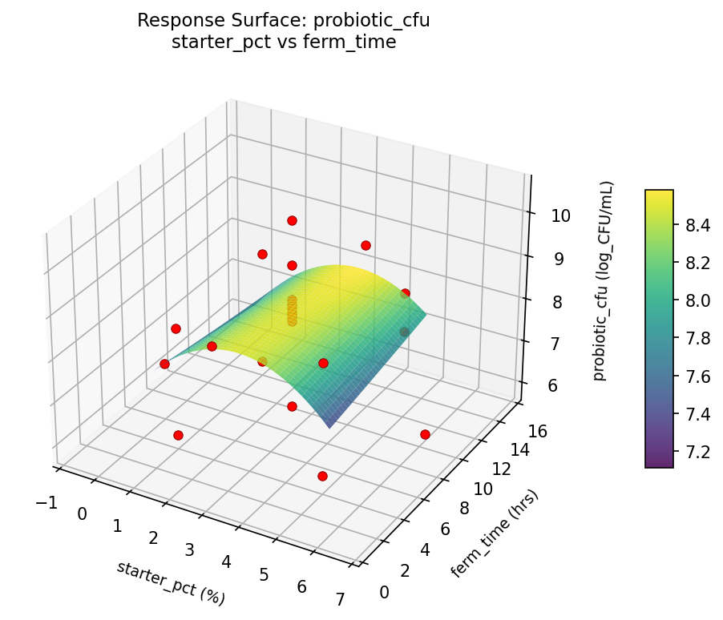
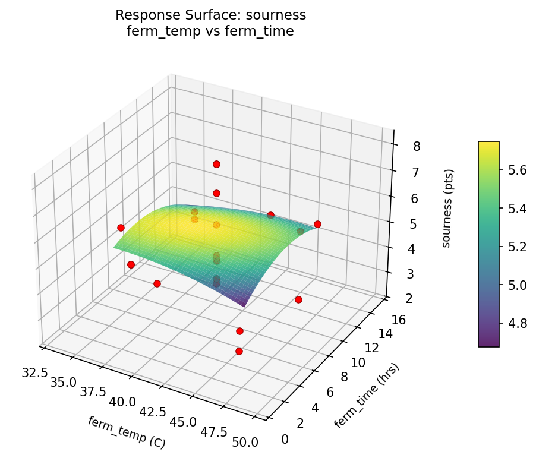
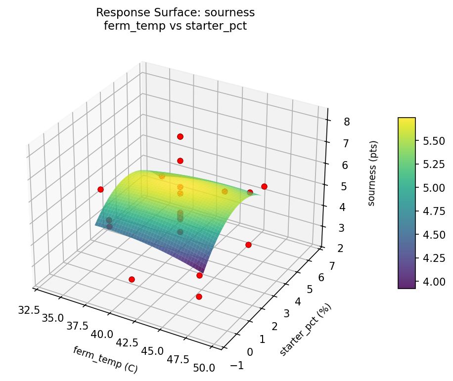
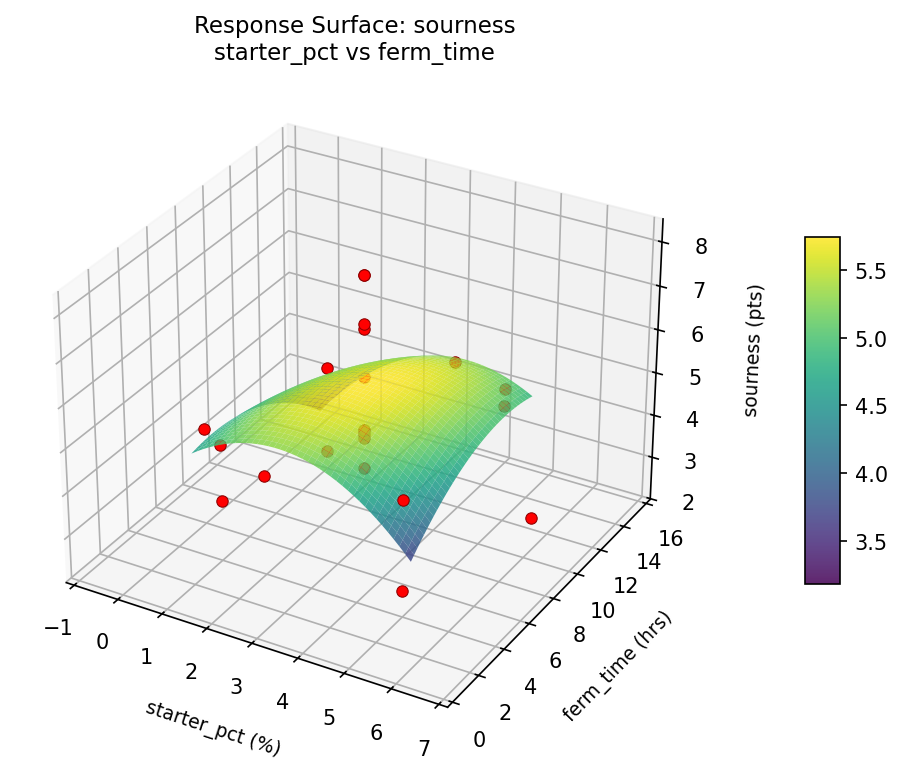

Summary
This experiment investigates yogurt fermentation optimization. Central composite design to maximize probiotic count and minimize sourness by tuning temperature, starter culture, and fermentation time.
The design varies 3 factors: ferm temp (C), ranging from 37 to 46, starter pct (%), ranging from 1 to 5, and ferm time (hrs), ranging from 4 to 12. The goal is to optimize 2 responses: probiotic cfu (log_CFU/mL) (maximize) and sourness (pts) (minimize). Fixed conditions held constant across all runs include milk fat pct = 3.5, pasteurization = 72C_15s.
A Central Composite Design (CCD) was selected to fit a full quadratic response surface model, including curvature and interaction effects. With 3 factors this produces 22 runs including center points and axial (star) points that extend beyond the factorial range.
Quadratic response surface models were fitted to capture potential curvature and factor interactions. The RSM contour plots below visualize how pairs of factors jointly affect each response.
Key Findings
For probiotic cfu, the most influential factors were ferm temp (49.7%), starter pct (30.1%), ferm time (20.2%). The best observed value was 10.5 (at ferm temp = 46, starter pct = 1, ferm time = 4).
For sourness, the most influential factors were ferm temp (52.8%), starter pct (28.4%), ferm time (18.8%). The best observed value was 2.4 (at ferm temp = 41.5, starter pct = 3, ferm time = 15.303).
Recommended Next Steps
- Run confirmation experiments at the predicted optimal settings to validate the model.
- Consider whether any fixed factors should be varied in a future study.
Experimental Setup
Factors
| Factor | Low | High | Unit |
|---|
ferm_temp | 37 | 46 | C |
starter_pct | 1 | 5 | % |
ferm_time | 4 | 12 | hrs |
Fixed: milk_fat_pct = 3.5, pasteurization = 72C_15s
Responses
| Response | Direction | Unit |
|---|
probiotic_cfu | ↑ maximize | log_CFU/mL |
sourness | ↓ minimize | pts |
Configuration
{
"metadata": {
"name": "Yogurt Fermentation Optimization",
"description": "Central composite design to maximize probiotic count and minimize sourness by tuning temperature, starter culture, and fermentation time"
},
"factors": [
{
"name": "ferm_temp",
"levels": [
"37",
"46"
],
"type": "continuous",
"unit": "C"
},
{
"name": "starter_pct",
"levels": [
"1",
"5"
],
"type": "continuous",
"unit": "%"
},
{
"name": "ferm_time",
"levels": [
"4",
"12"
],
"type": "continuous",
"unit": "hrs"
}
],
"fixed_factors": {
"milk_fat_pct": "3.5",
"pasteurization": "72C_15s"
},
"responses": [
{
"name": "probiotic_cfu",
"optimize": "maximize",
"unit": "log_CFU/mL"
},
{
"name": "sourness",
"optimize": "minimize",
"unit": "pts"
}
],
"settings": {
"operation": "central_composite",
"test_script": "use_cases/91_yogurt_fermentation/sim.sh"
}
}
Experimental Matrix
The Central Composite Design produces 22 runs. Each row is one experiment with specific factor settings.
| Run | ferm_temp | starter_pct | ferm_time |
|---|
| 1 | 41.5 | 3 | 8 |
| 2 | 46 | 1 | 12 |
| 3 | 37 | 5 | 4 |
| 4 | 41.5 | 6.65148 | 8 |
| 5 | 41.5 | 3 | 8 |
| 6 | 33.2842 | 3 | 8 |
| 7 | 41.5 | 3 | 0.697033 |
| 8 | 41.5 | 3 | 8 |
| 9 | 46 | 5 | 4 |
| 10 | 49.7158 | 3 | 8 |
| 11 | 41.5 | 3 | 8 |
| 12 | 41.5 | -0.651484 | 8 |
| 13 | 41.5 | 3 | 8 |
| 14 | 37 | 1 | 12 |
| 15 | 41.5 | 3 | 8 |
| 16 | 46 | 1 | 4 |
| 17 | 41.5 | 3 | 15.303 |
| 18 | 46 | 5 | 12 |
| 19 | 41.5 | 3 | 8 |
| 20 | 37 | 1 | 4 |
| 21 | 37 | 5 | 12 |
| 22 | 41.5 | 3 | 8 |
Step-by-Step Workflow
1
Preview the design
$ python doe.py info --config use_cases/91_yogurt_fermentation/config.json
2
Generate the runner script
$ python doe.py generate --config use_cases/91_yogurt_fermentation/config.json \
--output use_cases/91_yogurt_fermentation/results/run.sh --seed 42
3
Execute the experiments
$ bash use_cases/91_yogurt_fermentation/results/run.sh
4
Analyze results
$ python doe.py analyze --config use_cases/91_yogurt_fermentation/config.json
5
Get optimization recommendations
$ python doe.py optimize --config use_cases/91_yogurt_fermentation/config.json
6
Multi-objective optimization
With 2 competing responses, use --multi to find the best compromise via Derringer–Suich desirability.
$ python doe.py optimize --config use_cases/91_yogurt_fermentation/config.json --multi
7
Generate the HTML report
$ python doe.py report --config use_cases/91_yogurt_fermentation/config.json \
--output use_cases/91_yogurt_fermentation/results/report.html
Features Exercised
| Feature | Value |
|---|
| Design type | central_composite |
| Factor types | continuous (all 3) |
| Arg style | double-dash |
| Responses | 2 (probiotic_cfu ↑, sourness ↓) |
| Total runs | 22 |
Analysis Results
Generated from actual experiment runs using the DOE Helper Tool.
Response: probiotic_cfu
Top factors: ferm_temp (49.7%), starter_pct (30.1%), ferm_time (20.2%).
ANOVA
| Source | DF | SS | MS | F | p-value |
|---|
| Source | DF | SS | MS | F | p-value |
| ferm_temp | 4 | 10.1642 | 2.5411 | 1.820 | 0.2093 |
| starter_pct | 4 | 7.6367 | 1.9092 | 1.367 | 0.3189 |
| ferm_time | 4 | 4.2942 | 1.0736 | 0.769 | 0.5717 |
| Lack | of | Fit | 2 | 2.2207 | 1.1103 |
| Pure | Error | 7 | 9.7750 | | |
| Error | 9 | 11.9957 | 1.3964 | | |
| Total | 21 | 34.0909 | 1.6234 | | |
Pareto Chart

Main Effects Plot

Response: sourness
Top factors: ferm_temp (52.8%), starter_pct (28.4%), ferm_time (18.8%).
ANOVA
| Source | DF | SS | MS | F | p-value |
|---|
| Source | DF | SS | MS | F | p-value |
| ferm_temp | 4 | 10.1383 | 2.5346 | 0.800 | 0.5546 |
| starter_pct | 4 | 8.0158 | 2.0040 | 0.632 | 0.6519 |
| ferm_time | 4 | 3.6083 | 0.9021 | 0.285 | 0.8807 |
| Lack | of | Fit | 2 | 6.0538 | 3.0269 |
| Pure | Error | 7 | 22.1788 | | |
| Error | 9 | 28.2325 | 3.1684 | | |
| Total | 21 | 49.9950 | 2.3807 | | |
Pareto Chart

Main Effects Plot

Response Surface Plots
3D surfaces fitted with quadratic RSM. Red dots are observed data points.
probiotic cfu ferm temp vs ferm time

probiotic cfu ferm temp vs starter pct

probiotic cfu starter pct vs ferm time

sourness ferm temp vs ferm time

sourness ferm temp vs starter pct

sourness starter pct vs ferm time

Multi-Objective Optimization
When responses compete, Derringer–Suich desirability finds the best compromise.
Each response is scaled to a 0–1 desirability, then combined via a weighted geometric mean.
Overall Desirability
D = 0.6257
Per-Response Desirability
| Response | Weight | Desirability | Predicted | Dir |
|---|
probiotic_cfu |
1.0 |
|
8.83 0.6250 8.83 log_CFU/mL |
↑ |
sourness |
1.5 |
|
4.46 0.6262 4.46 pts |
↓ |
Recommended Settings
| Factor | Value |
|---|
ferm_temp | 37 C |
starter_pct | 5 % |
ferm_time | 12 hrs |
Source: from RSM model prediction
Trade-off Summary
Sacrifice = how much worse than single-objective best.
| Response | Predicted | Best Observed | Sacrifice |
|---|
sourness | 4.46 | 2.40 | +2.06 |
Top 3 Runs by Desirability
| Run | D | Factor Settings |
|---|
| #8 | 0.6039 | ferm_temp=33.2842, starter_pct=3, ferm_time=8 |
| #15 | 0.5953 | ferm_temp=37, starter_pct=5, ferm_time=12 |
Model Quality
| Response | R² | Type |
|---|
sourness | 0.6438 | quadratic |
Full Multi-Objective Output
============================================================
MULTI-OBJECTIVE OPTIMIZATION
Method: Derringer-Suich Desirability Function
============================================================
Overall desirability: D = 0.6257
Response Weight Desirability Predicted Direction
---------------------------------------------------------------------
probiotic_cfu 1.0 0.6250 8.83 log_CFU/mL ↑
sourness 1.5 0.6262 4.46 pts ↓
Recommended settings:
ferm_temp = 37 C
starter_pct = 5 %
ferm_time = 12 hrs
(from RSM model prediction)
Trade-off summary:
probiotic_cfu: 8.83 (best observed: 10.50, sacrifice: +1.67)
sourness: 4.46 (best observed: 2.40, sacrifice: +2.06)
Model quality:
probiotic_cfu: R² = 0.6733 (quadratic)
sourness: R² = 0.6438 (quadratic)
Top 3 observed runs by overall desirability:
1. Run #22 (D=0.6129): ferm_temp=46, starter_pct=1, ferm_time=4
2. Run #8 (D=0.6039): ferm_temp=33.2842, starter_pct=3, ferm_time=8
3. Run #15 (D=0.5953): ferm_temp=37, starter_pct=5, ferm_time=12
Full Analysis Output
=== Main Effects: probiotic_cfu ===
Factor Effect Std Error % Contribution
--------------------------------------------------------------
ferm_temp 3.2000 0.2716 49.7%
starter_pct 1.9333 0.2716 30.1%
ferm_time 1.3000 0.2716 20.2%
=== ANOVA Table: probiotic_cfu ===
Source DF SS MS F p-value
-----------------------------------------------------------------------------
ferm_temp 4 10.1642 2.5411 1.820 0.2093
starter_pct 4 7.6367 1.9092 1.367 0.3189
ferm_time 4 4.2942 1.0736 0.769 0.5717
Lack of Fit 2 2.2207 1.1103 0.795 0.4885
Pure Error 7 9.7750 1.3964
Error 9 11.9957 1.3964
Total 21 34.0909 1.6234
=== Summary Statistics: probiotic_cfu ===
ferm_temp:
Level N Mean Std Min Max
------------------------------------------------------------
33.2842 1 6.0000 0.0000 6.0000 6.0000
37 4 7.2750 1.4221 5.9000 8.6000
41.5 12 8.3917 1.1221 6.3000 10.5000
46 4 7.5500 1.1561 5.9000 8.4000
49.7158 1 9.2000 0.0000 9.2000 9.2000
starter_pct:
Level N Mean Std Min Max
------------------------------------------------------------
-0.651484 1 8.2000 0.0000 8.2000 8.2000
1 4 7.2000 1.5033 5.9000 8.6000
3 12 8.4333 1.2280 6.0000 10.5000
5 4 7.6250 1.0145 6.2000 8.4000
6.65148 1 6.5000 0.0000 6.5000 6.5000
ferm_time:
Level N Mean Std Min Max
------------------------------------------------------------
0.697033 1 8.5000 0.0000 8.5000 8.5000
12 4 7.2000 1.3342 5.9000 8.4000
15.303 1 8.5000 0.0000 8.5000 8.5000
4 4 7.6250 1.2285 5.9000 8.6000
8 12 8.2417 1.3460 6.0000 10.5000
=== Main Effects: sourness ===
Factor Effect Std Error % Contribution
--------------------------------------------------------------
ferm_temp 2.9000 0.3290 52.8%
starter_pct 1.5583 0.3290 28.4%
ferm_time 1.0333 0.3290 18.8%
=== ANOVA Table: sourness ===
Source DF SS MS F p-value
-----------------------------------------------------------------------------
ferm_temp 4 10.1383 2.5346 0.800 0.5546
starter_pct 4 8.0158 2.0040 0.632 0.6519
ferm_time 4 3.6083 0.9021 0.285 0.8807
Lack of Fit 2 6.0538 3.0269 0.955 0.4297
Pure Error 7 22.1788 3.1684
Error 9 28.2325 3.1684
Total 21 49.9950 2.3807
=== Summary Statistics: sourness ===
ferm_temp:
Level N Mean Std Min Max
------------------------------------------------------------
33.2842 1 2.6000 0.0000 2.6000 2.6000
37 4 4.0500 0.6028 3.4000 4.7000
41.5 12 5.2667 1.5973 3.5000 8.1000
46 4 4.8000 1.8886 2.4000 7.0000
49.7158 1 5.5000 0.0000 5.5000 5.5000
starter_pct:
Level N Mean Std Min Max
------------------------------------------------------------
-0.651484 1 4.5000 0.0000 4.5000 4.5000
1 4 3.8000 1.1165 2.4000 4.7000
3 12 5.2583 1.7106 2.6000 8.1000
5 4 5.0500 1.4201 3.7000 7.0000
6.65148 1 3.7000 0.0000 3.7000 3.7000
ferm_time:
Level N Mean Std Min Max
------------------------------------------------------------
0.697033 1 4.4000 0.0000 4.4000 4.4000
12 4 4.7000 1.6310 3.4000 7.0000
15.303 1 4.7000 0.0000 4.7000 4.7000
4 4 4.1500 1.2014 2.4000 5.1000
8 12 5.1833 1.7601 2.6000 8.1000
Optimization Recommendations
=== Optimization: probiotic_cfu ===
Direction: maximize
Best observed run: #18
ferm_temp = 46
starter_pct = 1
ferm_time = 4
Value: 10.5
RSM Model (linear, R² = 0.0147, Adj R² = -0.1495):
Coefficients:
intercept +7.9636
ferm_temp +0.1148
starter_pct -0.1331
ferm_time -0.0577
RSM Model (quadratic, R² = 0.2940, Adj R² = -0.2356):
Coefficients:
intercept +7.8992
ferm_temp +0.1148
starter_pct -0.1331
ferm_time -0.0577
ferm_temp*starter_pct -0.1375
ferm_temp*ferm_time -0.9875
starter_pct*ferm_time +0.1375
ferm_temp^2 -0.0028
starter_pct^2 +0.2222
ferm_time^2 -0.1228
Curvature analysis:
starter_pct coef=+0.2222 convex (has a minimum)
ferm_time coef=-0.1228 concave (has a maximum)
ferm_temp coef=-0.0028 negligible curvature
Notable interactions:
ferm_temp*ferm_time coef=-0.9875 (antagonistic)
Predicted optimum (from linear model, at observed points):
ferm_temp = 46
starter_pct = 1
ferm_time = 4
Predicted value: 8.2693
Surface optimum (via L-BFGS-B, linear model):
ferm_temp = 46
starter_pct = 1
ferm_time = 4
Predicted value: 8.2693
Model quality: Weak fit — consider adding center points or using a different design.
Factor importance:
1. ferm_time (effect: 2.8, contribution: 46.2%)
2. ferm_temp (effect: 2.4, contribution: 40.1%)
3. starter_pct (effect: 0.8, contribution: 13.6%)
=== Optimization: sourness ===
Direction: minimize
Best observed run: #20
ferm_temp = 41.5
starter_pct = 3
ferm_time = 15.303
Value: 2.4
RSM Model (linear, R² = 0.1179, Adj R² = -0.0291):
Coefficients:
intercept +4.8500
ferm_temp -0.0847
starter_pct -0.6249
ferm_time +0.0647
RSM Model (quadratic, R² = 0.3597, Adj R² = -0.1206):
Coefficients:
intercept +4.5684
ferm_temp -0.0847
starter_pct -0.6249
ferm_time +0.0647
ferm_temp*starter_pct -0.3250
ferm_temp*ferm_time -0.8500
starter_pct*ferm_time -0.3250
ferm_temp^2 +0.4208
starter_pct^2 +0.1508
ferm_time^2 -0.1492
Curvature analysis:
ferm_temp coef=+0.4208 convex (has a minimum)
starter_pct coef=+0.1508 convex (has a minimum)
ferm_time coef=-0.1492 concave (has a maximum)
Notable interactions:
ferm_temp*ferm_time coef=-0.8500 (antagonistic)
ferm_temp*starter_pct coef=-0.3250 (antagonistic)
starter_pct*ferm_time coef=-0.3250 (antagonistic)
Predicted optimum (from linear model, at observed points):
ferm_temp = 41.5
starter_pct = -0.651484
ferm_time = 8
Predicted value: 5.9909
Surface optimum (via L-BFGS-B, linear model):
ferm_temp = 46
starter_pct = 5
ferm_time = 4
Predicted value: 4.0757
Model quality: Weak fit — consider adding center points or using a different design.
Factor importance:
1. ferm_time (effect: 3.7, contribution: 40.2%)
2. ferm_temp (effect: 3.2, contribution: 34.5%)
3. starter_pct (effect: 2.3, contribution: 25.3%)